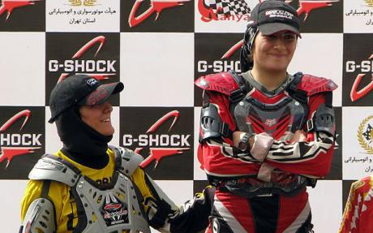

|
|
|
Browsing
Contact Us |
Campaigners |
Face to Face |
Tribune |
Interview |
News |
On the Web |
One Million |
Report
Farsi | Français | German | Italian | Spanish | العربية Also in this section
|
 Iran’s Female Motocross Champion Gets Uphill RideWednesday 23 December 2009 Nora Naraghi is barred by her gender from taking a motorcyle out on Iran’s roads, but has defied discrimination to become the country’s motocross champion. View online : Telegraf.co.uk Born into a family of motorcyclist enthusiasts, where motocross biking is a part of everyday life, Nora was prevented from obtaining a motorcycle licence, so she hit the sandy trails instead. "I was born into it. I remember I was four when my dad who is a motorcycle champion used to sit me on a little Montesa and let me do circles over and over in front of his motorbike shop," said Nora, who races in the MX2 category. "I recall that one day he thought I was tired and wanted to get me off the bike but I would not let go of the accelerator!" the 20 year-old added, punching her fist in the air. "I feel no pressure in following the passion of my parents. My father was once Iran’s motocross champion, my mum rides, I ride, my younger brother rides and of course my husband rides motocross bikes too," she said. "To quench my thirst for excitement was easy, since the gear and motors were available and accessible to me. Also for me biking is like horse-back riding, which I pursue as a hobby," she added. Although women are banned from riding motorcycles on the streets in Iran, scenes of women riding pillion on motorbikes are not unusual. But unlike Saudi Arabia, which is also deeply conservative, they are allowed to drive cars. Some even drive buses and long-haul trucks. Nora says the track at Azadi stadium, Tehran’s main sports complex, is off limits for women, and that this lack of available tracks is the main hurdle for women getting ahead in motocross. "We do not have a place to train like a permanent track, so we go to the hills in north-western Tehran, which my father has set up with basic technical requirements," she added. Hadi Moghaddas, Nora’s husband, said: "After marriage men usually kiss biking goodbye, but not I. I am now even more dedicated. "I came to know Nora through her father, since my father sold motorbike parts," Moghaddas explained. "We used to quarrel on the race track, and when I fell she would not stop and would only tell people at the finishing line that there was a casualty on the track!" he said. "We want our children to be bike riders too," said Moghaddas, with an approving look from Nora. Nora says her ambition extends beyond Iran’s borders. She wants to compete against US women in motocross. "I would really like to race outside Iran, and the Americans are the best in this sport." "My role model is Ashley Foilek, (the 2008 and 2009 US women’s motocross association champion). I like her style and like me she is young. But I do not think that my racing with her will happen soon." On the last day of October, Nora and eight other women including her mother, Shahrzad Nazifi, competed in Iran’s only motocross race in the MX2 category, set up by Xanyar motorbike club. She beat her mother, who was stiff competition. "It was an exciting day for me, I won fair and square," Nora said, looking at her mother sitting next to her. Nora’s mother, who is 38 years old and has biked for 22 years, said: "Of course she is younger and has more potential; she is also more technical than me and that is why she won." Nora, together with her mother and father, brother and husband managed to conquer the 3,900 metres summit (12,800 foot) of Mount Toochal, near Tehran, on trial bikes, another first in Iran. Nora’s dream is to promote motocross among Iranian women. "My mum and I, as pioneers of this sport in Iran, want to spread it as an exciting sport for all through the Xanyar club, where both of us are in charge of training women. I am currently training three other women. A lot of women do not know that this sport exists," Nora said. State-run television rarely shows women’s sports events though many Iranian women are avid sports enthusiasts and practitioners. Several have won medals in international tournaments that have allowed them to compete while wearing headscarves and observing Islamic dress code, notably Sara Khoshjamal-Fekri, 21. She became a heroine at home as the first Iranian female taekwondo Olympic qualifier and was listed by Time magazine as one of the "100 Olympic Athletes to Watch" at the Beijing 2008 Games, where she made it to the 16th round before being knocked out in quarter finals. |